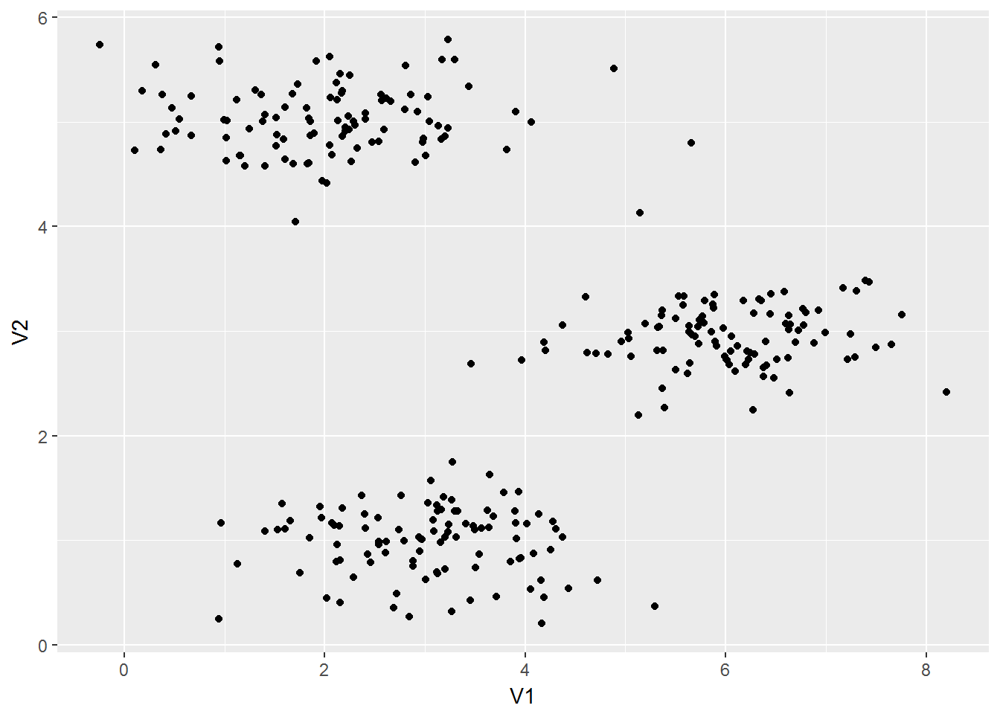
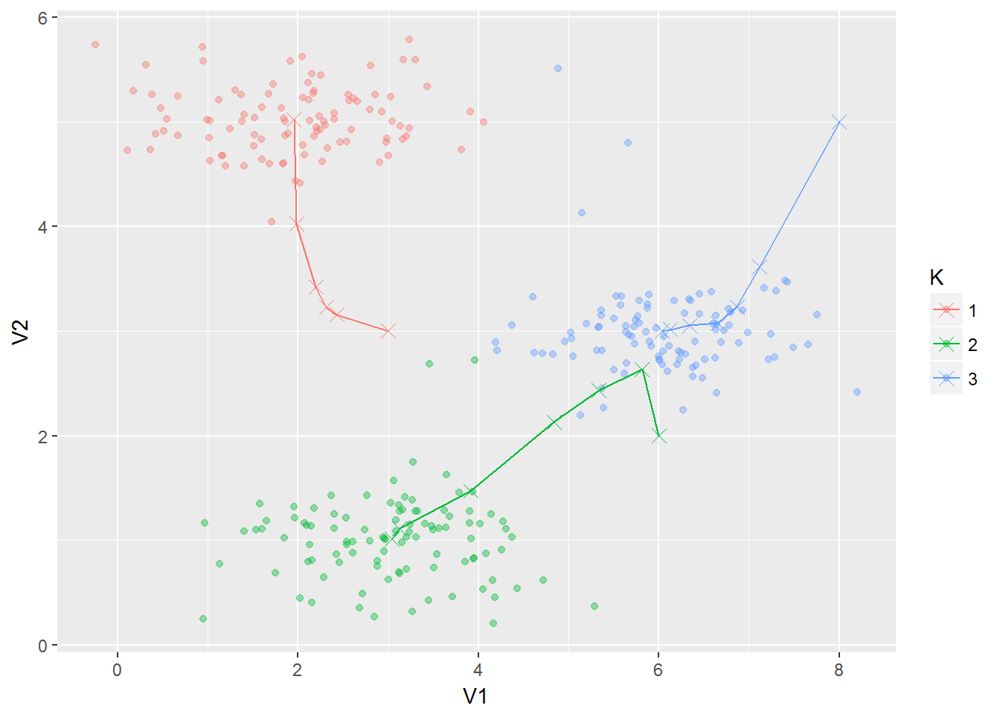
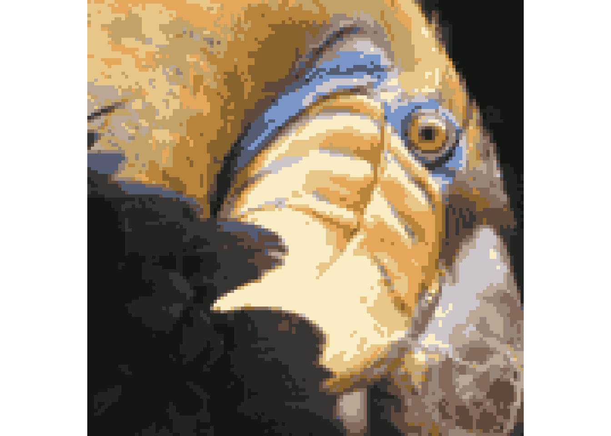
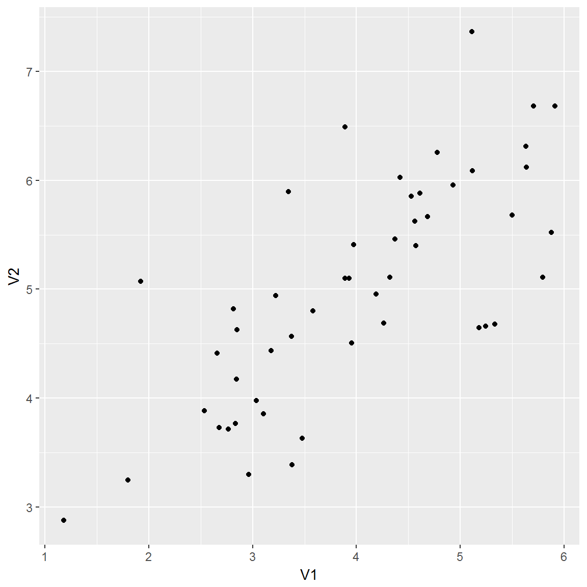
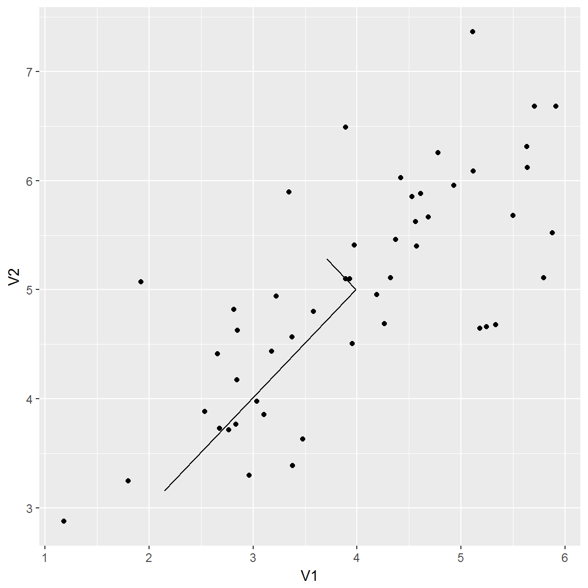
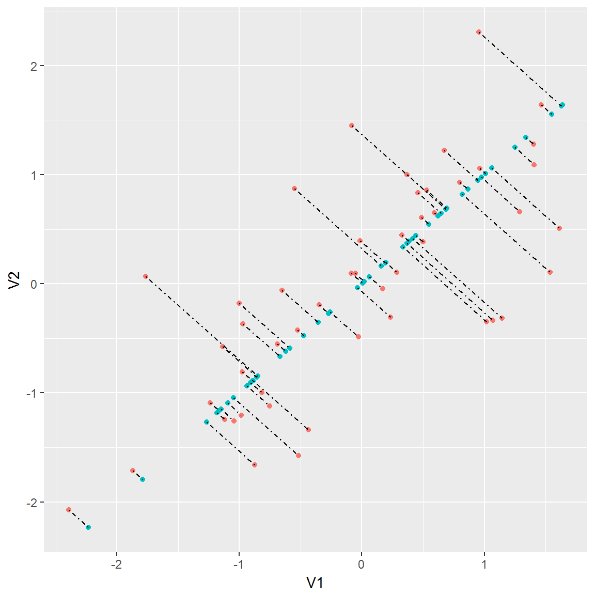
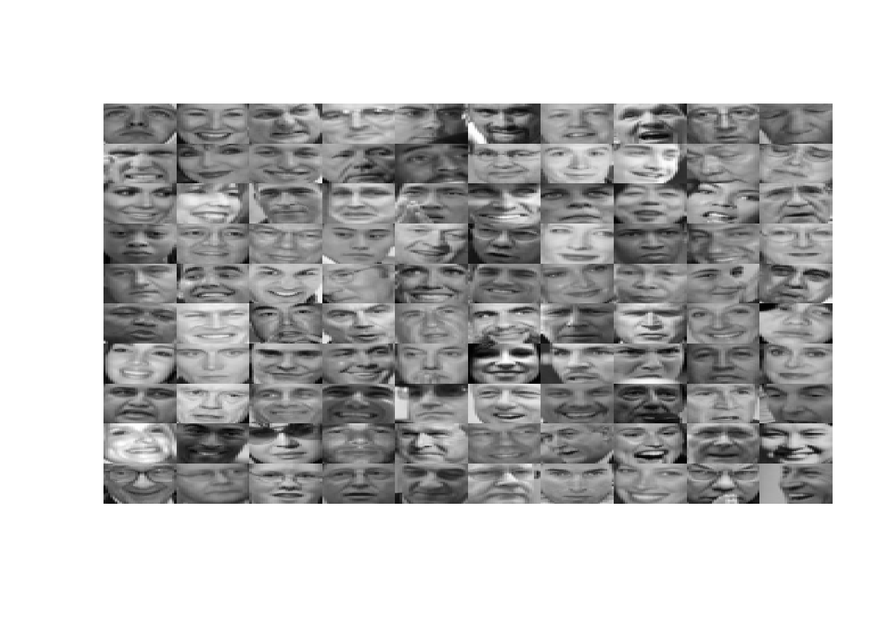

Exercise 7
Jai Broome
21 November, 2016
require(ggplot2)
require(knitr)
library(grid)
read_chunk("ex7/ex7_chunks.R")1 \(K\)-means Clustering
1.1 Implementing \(K\)-means
1.1.1 Finding closest centroids
ex7data2 <- read.csv("data/ex7data/ex7data2.csv")g1 <- ggplot(ex7data2, aes(V1, V2)) + geom_point()
g1
This part is fairly straightforward, but it’s broken into parts to make it easier to debug. minEuDist takes a coordinate and a vector of centroid coordinates and returns the index of the nearest one.
minEuDist <- function(xi, centroids){
euDist <- apply(centroids, 1, function(j){dist(rbind(j, xi))})
return(which.min(euDist))
}initial_centroids <- matrix(c(3, 3, 6, 2, 8, 5), 3, 2, TRUE)
minEuDist(ex7data2[15,], initial_centroids)## [1] 1findClosestCentroids <- function(X, centroids){
apply(X, 1, function(i){minEuDist(i, centroids)})
}findClosestCentroids applies minEuDist over an array.
We should see the output [1 3 2] corresponding to the centroid assignments for the first 3 examples.
idx <- findClosestCentroids(ex7data2, initial_centroids)
idx[1:3]## [1] 1 3 21.1.2 Computing centroid means
The other part of K-means clustering is updating the value of the centroids. This function takes the array of points, their initial assignment to a centroid, and the positions of the centroids. The data are then subsetted by centroid, and that centroid is moved to the new average value of those points that are assigned to it.
computeCentroids <- function(X, idx, K){
newCentroids <- K
for(k in 1:nrow(K)){
Xk <- X[k == idx,]
newCentroids[k, ] <- apply(Xk, 2, mean)
}
return(newCentroids)
}computeCentroids(ex7data2, idx, initial_centroids)## [,1] [,2]
## [1,] 2.428301 3.157924
## [2,] 5.813503 2.633656
## [3,] 7.119387 3.6166841.2 \(K\)-means on example dataset
runKMeans saves the values of the centroids that way we can plot their trajectory.
kMeans <- function(X, K, iter){
convergence <- matrix(nrow = iter + 1, ncol = nrow(X) + nrow(K) * ncol(K))
for(i in 1:iter){
idx <- findClosestCentroids(X, K)
convergence[i, ] <- c(idx, as.vector(t(K)))
K <- computeCentroids(X, idx, K)
}
idx <- findClosestCentroids(X, K)
convergence[iter + 1, ] <- c(idx, as.vector(t(K)))
return(convergence)
}runKMeans <- kMeans(ex7data2, initial_centroids, 10)
ex7data2 <- cbind(ex7data2, K = as.factor(runKMeans[nrow(runKMeans), 1:300]))g2 <- ggplot(ex7data2, aes(V1, V2, color = K)) +
geom_point(alpha = .4) +
geom_line(data = as.data.frame(runKMeans[, 301:302]),
mapping = aes(V1, V2, color = "1")) +
geom_line(data = as.data.frame(runKMeans[, 303:304]),
mapping = aes(V1, V2, color = "2")) +
geom_line(data = as.data.frame(runKMeans[, 305:306]),
mapping = aes(V1, V2, color = "3")) +
geom_point(data = as.data.frame(runKMeans[, 301:302]),
aes(V1, V2, color = "1"), shape = 4, size = 3) +
geom_point(data = as.data.frame(runKMeans[, 303:304]),
aes(V1, V2, color = "2"), shape = 4, size = 3) +
geom_point(data = as.data.frame(runKMeans[, 305:306]),
aes(V1, V2, color = "3"), shape = 4, size = 3)
g2 
1.3 Random initialization
randomInit <- function(X, n){X[sample(nrow(X), n), ]}set.seed(12345)
randomInit(ex7data2[,1:2], 3)## V1 V2
## 217 5.667310 2.964779
## 262 4.606305 3.329458
## 227 5.372939 2.8168481.4 Image compression with K-means

Here’s the image to be compressed
1.4.1 \(K\)-means on pixels
bird_small <- t(read.csv("data/ex7data/bird_small.csv"))
birdInit <- randomInit(bird_small, 16)
kMeansBird <- kMeans(bird_small, birdInit, 15)finalCentroid <- kMeansBird[nrow(kMeansBird),(ncol(kMeansBird)-16*3+1):ncol(kMeansBird)]
finalCentroid <- round(matrix(finalCentroid, nrow = 16, ncol = 3, byrow = TRUE))
compressedImage <- matrix(kMeansBird[nrow(kMeansBird), 1:(128*128)])If we take compressedImage and finalCentroid together, this provides all the information needed. To reconstruct the image, we map it back into standard RGB values. Note that these are uncompressed.
r <- sapply(compressedImage, function(x){finalCentroid[x, 1]})
g <- sapply(compressedImage, function(x){finalCentroid[x, 2]})
b <- sapply(compressedImage, function(x){finalCentroid[x, 3]})
col <- rgb(r, g, b, maxColorValue = 255)
dim(col) <- c(128, 128)grid.raster(col, interpolate=FALSE)
1.4.2 Optional (ungraded) exercise: Use your own image
2 Principal Component Analysis
2.1 Example Dataset
ex7data1 <- read.csv("data/ex7data/ex7data1.csv")
g3 <- ggplot(ex7data1, aes(V1, V2)) + geom_point()
g3
2.2 Implementing PCA
A note about SVD in R: unlike in Matlab, where the function returns the three matrices U, S, and V, svd returns a vector D containing the singular values of the input matrix, of length min(n, p) rather than a matrix S. It took me longer than I’d like to admit to figure this out.
ex71normd <- scale(ex7data1)
ex71svd <- svd(cov(ex71normd))
# We should expect the first principal component to be -0.707, -0.707
ex71svd$v[, 1]## [1] -0.7071068 -0.70710682.2.1 Plotting the eigenvectors of the scatterplot
The eigenvectors are centered at the mean of the data, and extend to the product of the singular values and left singular vectors. I again got some help from kaleko and he multiplied the endpoint of the vectors by 1.5, which I’ve done here as well. I’m not sure why that’s the case, but it appears to match the figure in the assignment sheet. Regardless, for dimensionality reduction, only the direction of the vector matters.
We plot these figures with the same scale on both axes so the eigenvectors appear perpendicular.
ex71means <- apply(ex7data1, 2, mean)
g4 <- g3 + geom_segment(x = ex71means[1],
xend = ex71means[1] + 1.5 * ex71svd$d[1] * ex71svd$u[1,1],
y = ex71means[2],
yend = ex71means[2] + 1.5 * ex71svd$d[1] * ex71svd$u[1,2]) +
geom_segment(x = ex71means[1],
xend = ex71means[1] + 1.5 * ex71svd$d[2] * ex71svd$u[2,1],
y = ex71means[2],
yend = ex71means[2] + 1.5 * ex71svd$d[2] * ex71svd$u[2,2])
g4
2.3 Dimensionality Reduction with PCA
2.3.1 Projecting the data onto the principal components
projectData <- function(X, U, K){
X %*% U[, 1:K]
}We should see a value of about 1.481.
Z <- projectData(ex71normd, ex71svd$u, 1)
Z[1]## [1] 1.4812742.3.2 Reconstructing an approximation of the data
recoverData <- function(Z, U, K){
Z %*% t(U[, 1:K])
}We should see a value of about [-1.047 -1.047].
X_rec <- recoverData(Z, ex71svd$u, 1)
X_rec[1,]## [1] -1.047419 -1.0474192.3.3 Visualizing the projections
m <- as.data.frame(ex71normd)
m$pc <- "Original"
n <- as.data.frame(X_rec)
n$pc <- "Projected"
ex71projected <- rbind(m, n)
rm(m)
rm(n)
ex71projected$pc <- as.factor(ex71projected$pc)
ex71projected$match <- 1:50
g5 <- ggplot(ex71projected, aes(V1, V2, group = match)) +
geom_point(aes(color = pc)) +
geom_line(linetype = "dotdash") +
theme(legend.position="none")
g5
2.4 Face Image Dataset
ex7faces <- as.matrix(read.csv("data/ex7data/ex7faces.csv"))plotFaces <- function(X){
# This assumes there will be at least 100 square, grayscale pictures
k <- sqrt(ncol(X))
X <- X[1:100,]
Xreshaped <- matrix(nrow = k * 10, ncol = 0)
for(i in 1:10){
Xtall <- matrix(nrow = 0, ncol = k)
for(j in (10 * i - 9):(10 * i)){
## The indexing is a little weird because we want 1:10, then 11:20,
## etc.
face <- matrix(X[j,], k, k, TRUE)[, k:1]
Xtall <- rbind(Xtall, face)
}
Xreshaped <- cbind(Xreshaped, Xtall)
}
image(Xreshaped, axes = F, col = grey(seq(0, 1, length = 256)))
}I’m having a hell of a time getting these to display correctly so I’ll come back to it later. I think the easiest way to do it will be to write the image to a file then display it here.
ex7faces <- (ex7faces + 128) / 256
plotFaces(ex7faces)
2.4.1 PCA on Faces
facesScaled <- scale(ex7faces)
facesSvd <- svd(cov(facesScaled))
facesProjectd <- projectData(X = facesScaled, U = facesSvd$u, K = 100)2.4.2 Dimensionality Reduction
facesRecovered <- recoverData(facesProjectd, facesSvd$u, 100)
plotFaces(facesRecovered)